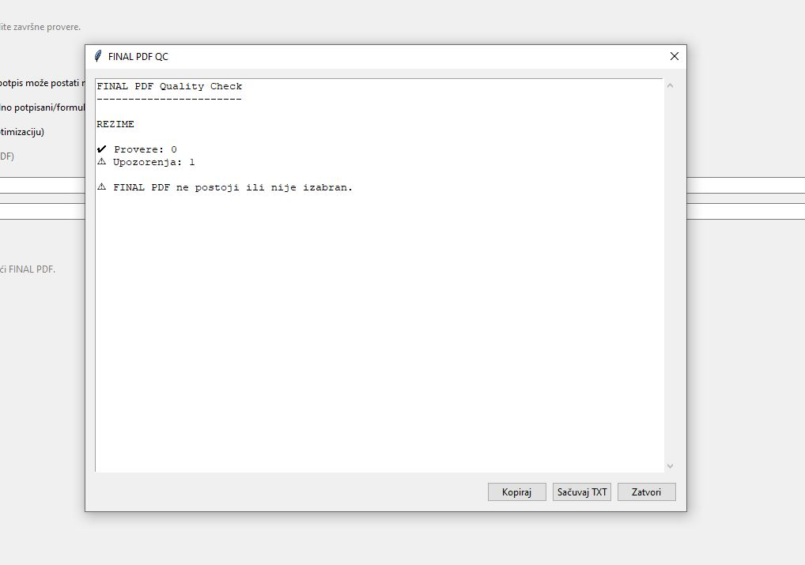
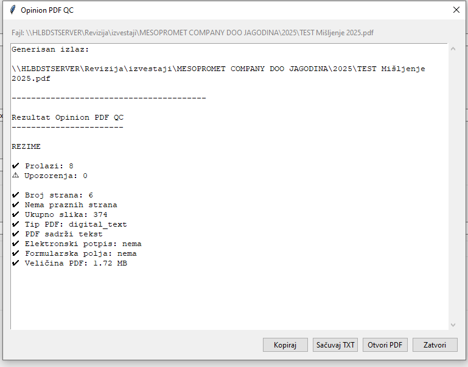
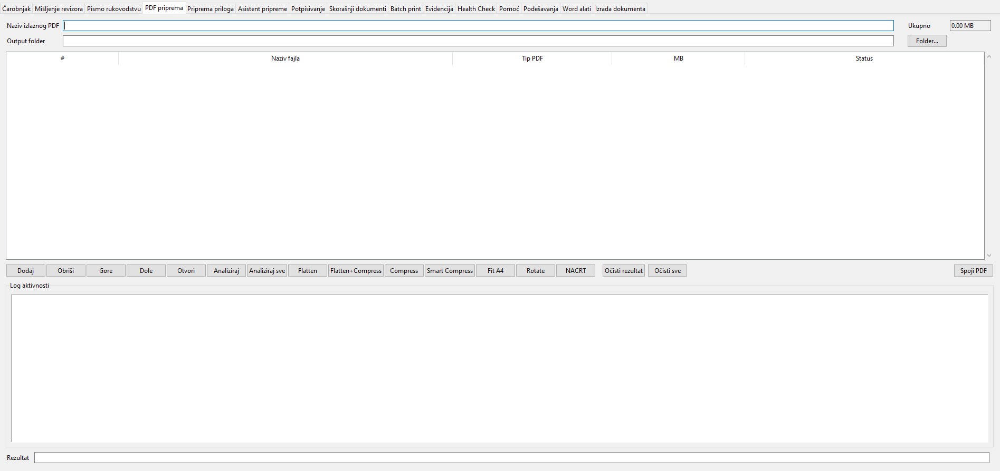
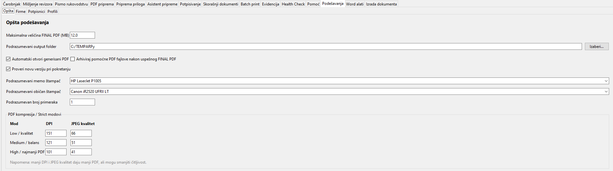

ARPy screenshots
Vizuelni pregled najvažnijih delova ARPy aplikacije: Čarobnjak, napredni režim, PDF obrada, kontrole kvaliteta i podešavanja.
Glavni workflow

Čarobnjak — vođeni workflow za pripremu revizorskog izveštaja.

Napredni režim — dodatna kontrola nad dokumentima, PDF obradom i podešavanjima.
Quality Control

FINAL PDF QC — završna tehnička provera kompletnog PDF izveštaja.

QC Report Dialog — pregled rezultata, kopiranje izveštaja i čuvanje u TXT fajl.
PDF obrada

PDF priprema — analiza, Fit A4, optimizacija i obrada posebnih PDF dokumenata.

Podešavanja — profili, štampači, PDF kompresija i pomoćne opcije.
Napomena
Nazivi slika u ovoj stranici pretpostavljaju da se screenshotovi nalaze u folderu docs/assets.
Ako neki screenshot još ne postoji, odgovarajuća slika se neće prikazati dok se fajl ne doda u assets folder.